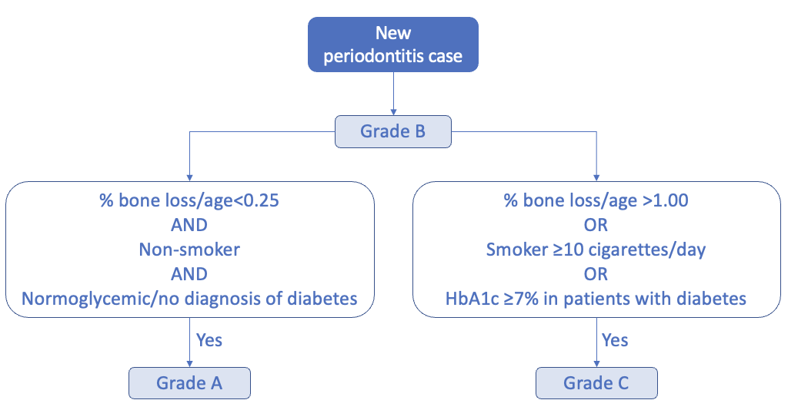

Extent and Grading
Contents
Extent and Grading¶
%matplotlib inline
# Load the "autoreload" extension
%load_ext autoreload
# always reload modules
%autoreload 2
# black formatter for jupyter notebooks
#%load_ext nb_black
# black formatter f|or jupyter lab
%load_ext lab_black
%run ../src/notebook_env.py
---------------------------------
Working on the host: Joachims-MacBook-Pro.local
---------------------------------
Python version: 3.9.7 (default, Sep 16 2021, 08:50:36)
[Clang 10.0.0 ]
---------------------------------
Python interpreter: /opt/miniconda3/envs/idz-parostatus/bin/python
---------------------------------
Root (ROOT) directory is set to /Users/jokr/Documents/Projekte_Extern/IDZ/DMS-V-ParoStatus
---------------------------------
data (DATA) directory is set to /Users/jokr/Documents/Projekte_Extern/IDZ/DMS-V-ParoStatus/data
---------------------------------
Attaching the following source folders:
/Users/jokr/Documents/Projekte_Extern/IDZ/DMS-V-ParoStatus/src
Import modules
import numpy as np
import pandas as pd
import matplotlib.pyplot as plt
# from util import FdiNomenclaure, less_than_two_non_adjacent_teeth
# fdi = FdiNomenclaure()
Load cohort dataset¶
fp = DATA.joinpath("processed")
fn = "dmsV_periodontitis_cases_staged.parquet"
file = fp.joinpath(fn)
assert file.exists()
data = pd.read_parquet(file)
data.shape
(888, 69)
Disease extent¶
Disease extent is described by the percentage of probed teeth presenting with the CAL condition of the identified stage, adding the number of teeth that are missing primarily due to periodontitis (if available). The number of missing teeth is determined for the same tooth positions, for which periodontal measurements were planned according to the probing protocol. For example, the maximum number of missing teeth is 28 for full-mouth periodontal recordings, 14 for half-mouth periodontal recordings, and 6 for Ramfjord teeth recordings. Wisdom teeth are excluded from calculations. Disease extent is categorized as localized (<30%) or generalized (≥30%).
Note: That in this analysis the number of missing teeth was added to compute the extent. But this is for sure a matter for discussion.
Missing values¶
assert data.teeth_affected_ratio.isnull().sum() == 0
Average¶
data.teeth_affected_ratio.mean()
0.29531421648736406
Assignment of localized (<30%) or generalized (≥30%)¶
Disease extent is described by the percentage of probed teeth presenting with the CAL condition of the identified stage, adding the number of teeth that are missing primarily due to periodontitis (if available). Disease extent is categorized as localized (<30%) or generalized (≥30%).
data["extent"] = data["teeth_affected_ratio"].apply(
lambda x: np.nan
if np.isnan(x)
else "localized (<30%)"
if x < 0.30
else "generalized (≥30%)"
)
ax = data["extent"].value_counts().sort_index().plot.barh()
for container in ax.containers:
ax.bar_label(container, size=15)
ax.grid(axis="x")
print(data["extent"].notnull().sum())
888
ax = data.groupby("staging_with_MT")["extent"].value_counts().sort_index().plot.barh()
for container in ax.containers:
ax.bar_label(container, size=15)
ax.grid(axis="x")
ax.set_ylabel("")
ax.set_title("Extent for staging with MT", size=22)
print(data["staging_with_MT"].notnull().sum())
888
ax = (
data.groupby("staging_without_MT")["extent"].value_counts().sort_index().plot.barh()
)
for container in ax.containers:
ax.bar_label(container, size=15)
ax.grid(axis="x")
ax.set_ylabel("")
ax.set_title("Extent for staging without MT", size=22)
print(data["staging_without_MT"].notnull().sum())
888
Grading¶
Study participants can be graded if baseline data for bone loss (or follow-up data for bone loss or CAL), age, smoking status, the number of cigarettes per day, diabetes diagnosis, and HbA1c are non-missing. Periodontitis cases are first categorized as grade B (Tonetti et al., 2018). Participants with non-missing data for smoking status and the number of cigarettes per day, with no diagnosis of diabetes but missing HbA1c levels are graded as B (Figure 4). The periodontitis grade can then be modified by the smoking and the diabetes status. Non-smoking, normoglycemic periodontitis cases with no diagnosis of diabetes and % bone loss/age<0.25 are categorized as grade A. If periodontitis cases either have % bone loss/age>1.00 or are smokers with ≥10 cigarettes per day or are diabetes patients with an HbA1c ≥7.0%, they are categorized as grade C. Information on the case phenotype is usually not available in observational studies and is therefore not considered in the process of grading.
Note: For grading the bone loss in % is missing. The experts will investigate if we could use standardised tooth lengths and compute the bone loss in % thereafter.
$$\text{Bone loss (in %)} = \frac{100 \times CAL}{\text{tooth length}} $$
Save to disk¶
fn = "dmsV_periodontitis_cases_staged_extent.parquet"
fp = DATA.joinpath("processed", fn)
data.to_parquet(fp)
assert fp.exists(), fp